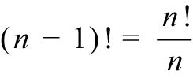
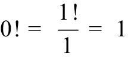

在本书开头，我们讨论了从1到100的数字求和问题，最后得出的答案是5 050，并推导出前n个数字的简便求和公式。现在，假设我们希望算出从1到100的所有数字的乘积，该怎么办呢？这个数字非常大！如果你感兴趣，我可以告诉你这个数字一共有158位：
93 326 215 443 944 152 681 699 238 856 266 700 490 715 968 264 381 621 468 592 963 895 217 599 993 229 915 608 941 463 976 156 518 286 253 697 920 827 223 758 251 185 210 916 864 000 000 000 000 000 000 000 000
本章将告诉大家，计数问题正是建立在这类数字的基础之上。在这类数字的帮助下，我们可以判断图书（接近5亿册）在书架上有多少种排列方式，在扑克牌游戏中拿到至少一对牌（运气不错）的概率是多少，彩票中奖的概率是多少（不会太大）。
我们把从1到n的所有数字的乘积记作n!，读作“n的阶乘”。
n! = n×(n – 1) ×(n – 2) ×…×3×2×1
例如：
5! = 5×4×3×2×1 = 120
我觉得用感叹号来表示阶乘十分恰当，因为n! 的增长速度非常快，而且有许多激动人心或令人惊讶的应用。为方便起见，数学家规定0! = 1，当n为负数时，n! 没有意义。
根据阶乘的定义，很多人都以为0! 应该等于0。但是，我要告诉大家，0! = 1是有道理的。当 n ≥ 2时，n! = n×(n – 1)!，因此：

要使这个等式在 n = 1时也成立，就需要满足：

从下面可以看出，阶乘的增长速度非常快：
000! = 1
001! = 1
002! = 2
003! = 6
004! = 24
005! = 120
006! = 720
007! = 5 040
008! = 40 320
009! = 362 880
010! = 3 628 800
011! = 39 916 800
012! = 479 001 600
013! = 6 227 020 800
020! = 2.43×1018
052! = 8.07×1067
100! = 9.33×10157
这些数字到底有多大呢？据估计，全世界大约有1022颗沙砾，整个宇宙大约有1080个原子。一副扑克牌有52张（不含大小王），就有52! 种排列方式，因此你看到的那种排列可能前所未见。假设地球上的每个人每分钟洗一次牌，那么在接下来的100万年里，可能都无法再次看到之前的那种排列。
在本章开头讨论100! 时，大家可能注意到它的答案尾部有大量的0出现。这些0是从哪里来的？在计算从1到100的数字乘积时，每次5的倍数与2的倍数相乘都会得到一个0。在1~100中，共有20个5的倍数和50个偶数，这似乎意味着得数的末尾应该有20个0。但是，25、50、75和100这4个数字分别多贡献了一个0，因此100! 的末尾有24个0。
同第1章讨论的数字一样，阶乘也会表现出很多美妙的规律。下面是我最喜爱的一个：
1×1! = 1 = 2!–1
1×1! + 2×2! = 5 = 3!–1
1×1! + 2×2! + 3×3! = 23 = 4!–1
1×1! + 2×2! + 3×3! + 4×4! = 119 = 5!–1
1×1! + 2×2! + 3×3! + 4×4! + 5×5! = 719 = 6!–1
…